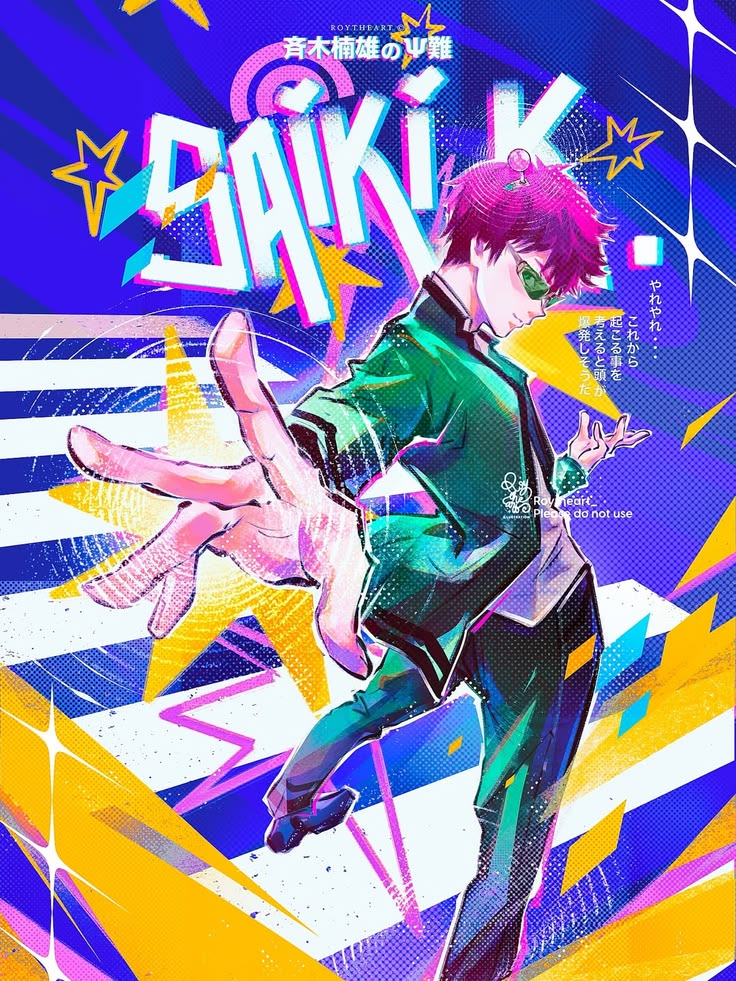
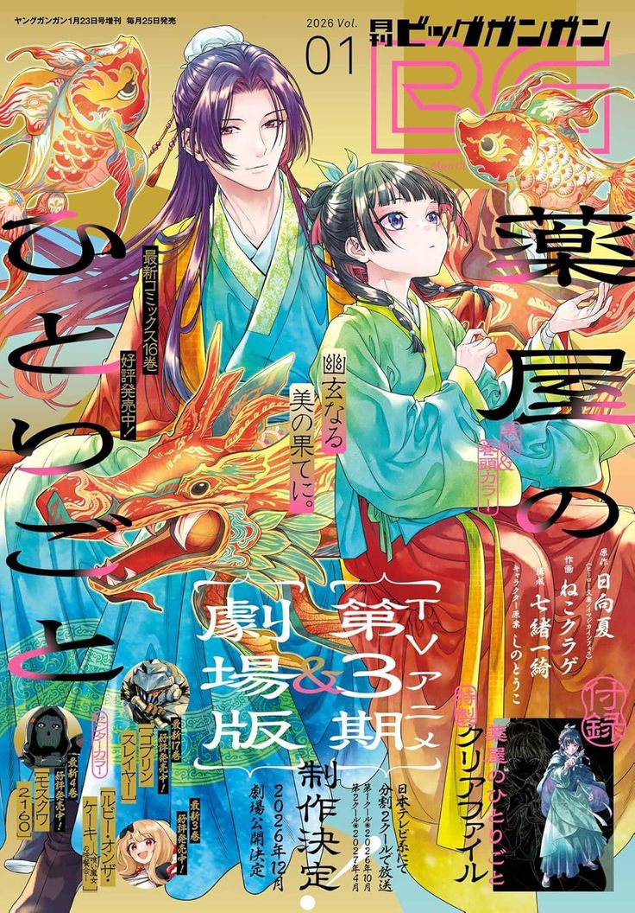

Mi top 10 en animes.
Jujutsu Kaisen
Un joven psíquico lucha por controlar sus poderes mientras enfrenta desafíos sobrenaturales.

Saiki
Un anime de comedia que sigue las aventuras de un grupo de jóvenes en una escuela de arte.

Los 7 pecados capitales
Un grupo de caballeros legendarios con poderes únicos lucha para salvar su reino.

Seraph on the end
Un joven se une a un grupo de vampiros para vengar la muerte de su familia.

Aphotecary diaris
Un anime de comedia que sigue las aventuras de un grupo de jóvenes en una escuela de arte.
